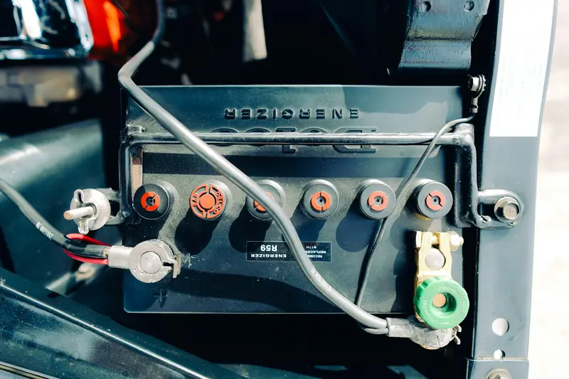

Group 01 / 02
Power and Charging Systems
These services keep your Mercedes starting, charging and supplying steady power to every module.
5 servicesOne weak battery or wet connector can light up half your dashboard. We test each circuit, module and ground until we find the real cause, because we refuse to swap expensive parts on a guess when a proper fix is within reach.

Electrical faults rarely stay small. Here’s what to watch for and how quickly to act.
Likely causeWeak battery, starter or poor ground
Book nowLikely causeParasitic drain or failing module
Book within a few daysLikely causeBackup battery or DC/DC converter
Book soonLikely causeAlternator or charging fault
Drive to a workshop nowLikely causeLow voltage or network fault
Book nowLikely causeSAM module or water damage
Book nowLikely causeCharging fault or headlight module
Book soonLikely causeMotor, switch or wiring fault
Book when convenientLikely causeShort circuit or loose ground
Stop and call usWater and electricity don’t mix, and Mercedes knows it. A 2022 Mercedes recall found that water in the trunk could seep into the rear SAM and cause a short circuit. Corrosion spreads once moisture gets inside a module, so a small leak can turn a cheap seal repair into a costly module replacement.
Loose connections are another risk. In 2024, Mercedes recalled 116,020 GLE, GLS and AMG models because a 48-volt ground connection under the passenger seat might not be secured and could overheat. A loose ground doesn’t just cause glitches. It creates heat.
Batteries also fail faster here. A dubizzle Cars review of over 20,000 UAE inspections in 2026 found about 14% of cars had battery health below 30%. Fleet data from Thrifty shows 25 to 35% more battery-related service requests in summer than in cooler months.
Why it pays to act early
From a flat battery to a water-damaged module, we repair every part of your Mercedes electrical system.
These services keep your Mercedes starting, charging and supplying steady power to every module.
5 servicesWe load test the battery, check its real health and fit the correct AGM or standard type. Every new battery is registered and coded to the car, so the charging system manages it correctly.
Ask about thisMany Mercedes models carry a small backup battery that supports key systems. We replace it and clear the “auxiliary battery malfunction” message, then check the circuit that charges it.
Ask about thisWe test alternator output, voltage regulation and belt condition. A weak alternator drains the battery and can trigger random warnings across the car.
Ask about thisClicking, slow cranking or no start can point to the starter or its wiring. We test the circuit first, then repair or replace only what has failed.
Ask about thisMany newer Mercedes models use a 48V system with an integrated starter-generator. We diagnose 48V battery, DC/DC converter and ground faults, and check for open recalls on your VIN.
Ask about this
These services cover the control units, wiring and features you use every day.
5 servicesThe SAM modules control lights, wipers, locks and much more. We find and fix the leak behind the failure, then repair or replace the module and code it to your car.
Ask about thisHeat, vibration and moisture damage wires and pins over time. We trace faulty circuits, repair harnesses and clean or replace corroded connectors.
Ask about thisA battery that dies while parked usually has a hidden power draw. We measure the drain circuit by circuit and find the module or accessory that won’t switch off.
Ask about thisWe repair LED headlights, Multibeam units, tail lights and interior lighting. Faulty bulbs, control modules and wiring are tested before anything is replaced.
Ask about thisWe fix power windows, seat motors, mirrors, central locking, keyless entry and MBUX screen faults. Each repair is tested with the car’s own diagnostics.
Ask about thisYour Mercedes doesn’t have one electrical system. It has several layers that work together.
SAM stands for Signal Acquisition and Actuation Module. It acts as a smart fuse box. It reads signals from switches and sensors, then switches lights, wipers, horns, locks and other parts on and off. Most Mercedes models have a front SAM near the engine bay or footwell and a rear SAM in the trunk area.
Water is the main cause of SAM failure. Blocked sunroof drains, leaking taillight seals and clogged cowl drains let water reach the module. In Abu Dhabi, sand and dust block these drains faster, especially on cars parked outdoors.
When a SAM fails, the symptoms can look random. Doors may show open when closed, lights may stay on, wipers may run on their own or the car may not start. We always find and fix the leak first. Replacing a SAM without fixing the leak only leads to a second failure.
The SAM in numbers
Several Mercedes electrical recalls have been issued in recent years. Some UAE cars may also be affected, so we check your VIN during every electrical inspection.
If your car has an open recall, the dealer fixes it free of charge. We’ll tell you if we find one.
Heat speeds up the chemical reactions inside a battery. Plates corrode faster and water evaporates from the cells, which is why UAE batteries often fail without warning in summer.
Heat also ages wiring. Plastic insulation and connector housings turn brittle, seals harden and pins loosen. A connector that worked fine in winter can start causing intermittent faults by August.
High electrical load adds to the strain. Your AC fan, cooling fans and seat ventilation all run hard in summer traffic, and the charging system has to keep up at low engine speed. A weak alternator or battery that copes in winter often fails here first.
Not every electrical fault needs a new part. Here’s how we decide.
Repair the wiring and clean or replace the pins
Recode or update the software
Fix the leak, then repair or replace based on the damage
Replace, then code it to your car
Replace and register the new battery
Repair or replace, then test the full charging system
A five-minute test can prevent a roadside breakdown.
Sunroof, cowl and door drains block easily with sand and dust.
Poorly wired dash cams, chargers and lighting can drain the battery or damage circuits.
If your car sits for more than a week or two, keep the battery charged.
Lower cabin and engine bay temperatures slow battery and wiring wear.
Low voltage can cause false faults in other systems.
Mercedes needs the correct type and capacity, plus registration after fitting.
Five clear steps, the same on every job, so you always know what is happening and why.
We ask when the fault happens and what you notice. Intermittent faults often follow a pattern we can use.
We check battery health and charging, then scan every module with XENTRY. All fault codes are saved before anything is cleared.
We follow the circuit with live data and voltage drop tests. This shows exactly where the fault sits in the wiring or module.
We fix the cause with approved parts and code any new module to your car. Nothing is replaced without your approval.
We rescan the car, test the repaired circuit and road test it. You leave with a clean scan and a clear report.
MOIAT-certified, Mercedes-focused and rated 4.5 from 765 Google reviews. Here is what that means for your car.
Our technicians work on Mercedes electrical systems every week. They know the common faults on each model and where to look first.
We use XENTRY to read every module and run guided tests. This shows faults that a basic scanner would miss.
We trace each fault to its source before quoting. You only pay for the repair your car actually needs.
We find and fix the water source before touching a SAM or other module. This stops the same failure from coming back.
New batteries and modules are coded to your car after fitting. This keeps charging, comfort and safety systems working as designed.
You see the full quote before any work begins. If we find something extra, we call you first.
It depends on the fault. A battery or auxiliary battery replacement costs far less than tracing an intermittent wiring fault or replacing a SAM module. We confirm the price after diagnosis.
Battery and auxiliary battery jobs usually take an hour or two. Wiring faults and module replacements can take a day or more, depending on the fault and parts.
It depends on the warning. A faulty seat motor can wait. A red battery warning, several lights at once or a burning smell need attention straight away, so stop safely and call us.
It means the small backup battery is weak or not charging. Your car may still start and drive normally, but the backup supply for key systems isn’t working. We test and replace it.
Yes. Mercedes uses the battery data to manage charging. A new battery should be registered so the system charges it correctly and it lasts longer.
The usual causes are a hidden power drain, a weak alternator, an ageing battery or an aftermarket accessory. We measure the drain and test the charging system to find out which one.
Yes. We find and fix the leak first, then repair or replace the module depending on how bad the damage is. Replacement modules are coded to your car.
 Brake RepairPads, discs, DOT 4 Plus fluid, ABS and AMG brakes.
Brake RepairPads, discs, DOT 4 Plus fluid, ABS and AMG brakes. Transmission Repair7G, 9G-TRONIC and DCT gearbox repair and rebuilds.
Transmission Repair7G, 9G-TRONIC and DCT gearbox repair and rebuilds. Engine RepairTiming chains, head gaskets, leaks, turbos and AMG V8s.
Engine RepairTiming chains, head gaskets, leaks, turbos and AMG V8s. PaintingPaint-code matching, panel paint, resprays and ceramic coating.
PaintingPaint-code matching, panel paint, resprays and ceramic coating. Body ShopCollision, dent, bumper and aluminium repair with ADAS calibration.
Body ShopCollision, dent, bumper and aluminium repair with ADAS calibration. DiagnosticsXENTRY full-module scans, live data and warning lights.
DiagnosticsXENTRY full-module scans, live data and warning lights. Oil ChangeMB 229-approved oil, genuine filters and ASSYST reset.
Oil ChangeMB 229-approved oil, genuine filters and ASSYST reset. AC RepairR1234yf regas, compressors, leaks and climate control.
AC RepairR1234yf regas, compressors, leaks and climate control.Don’t let a small electrical fault turn into a costly breakdown. Book your Mercedes electrical check today, and our team will trace the fault, explain it clearly and fix it right the first time. We also offer a full Mercedes diagnostics check for warning lights across every system.